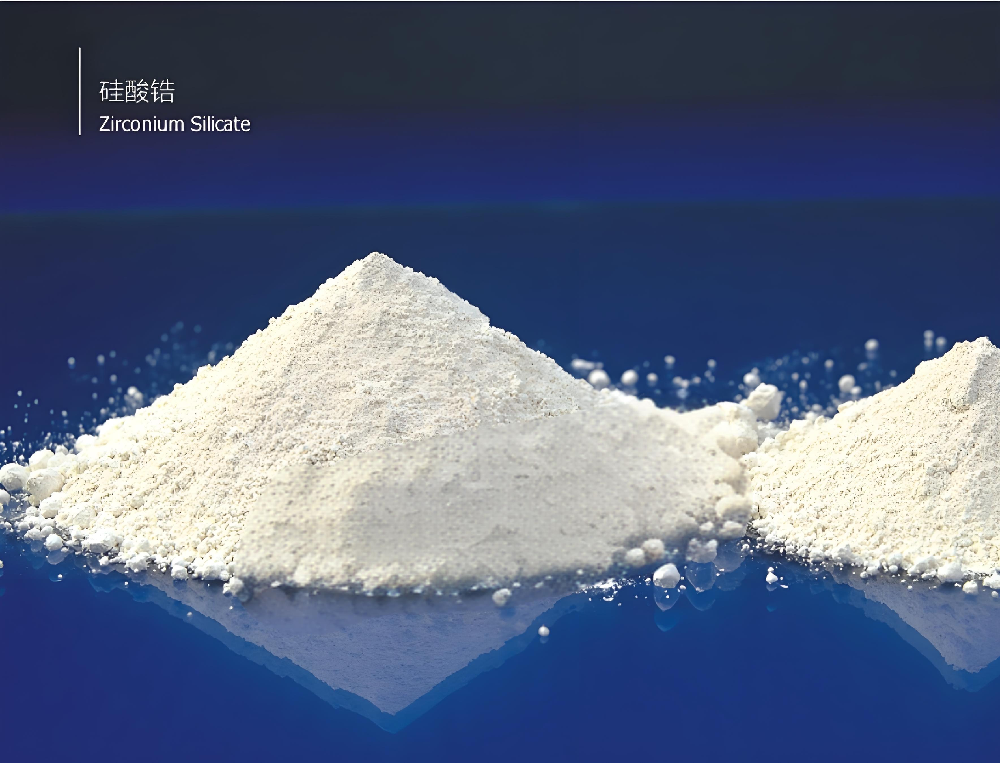
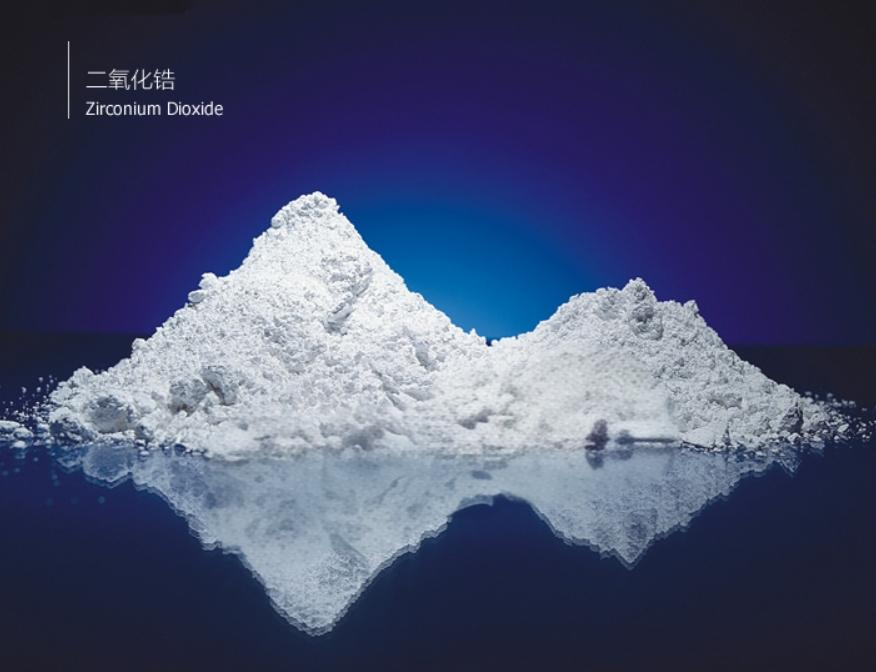
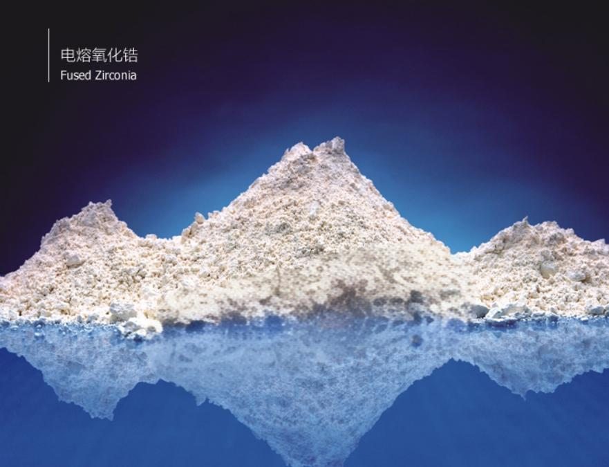
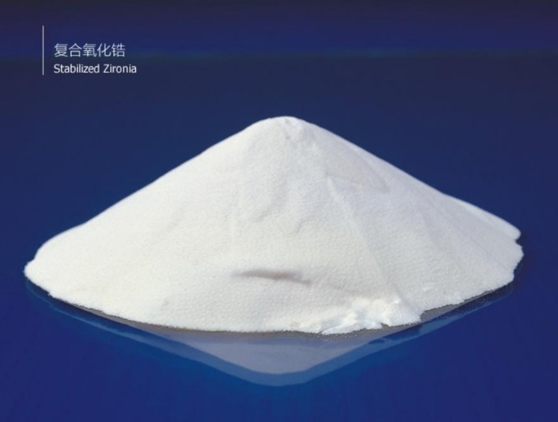
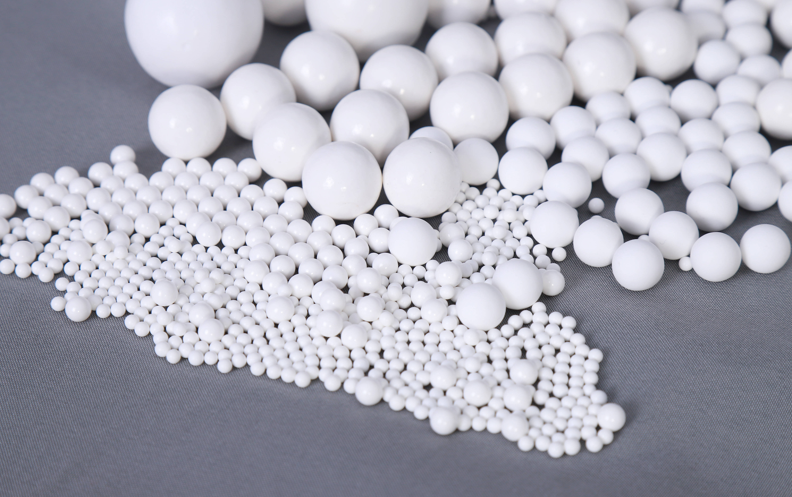

灰白色粉末，化学稳定性好。
Gray-white powder with good chemical stability.
应用于玻璃添加剂、卫生洁具、墙地砖等陶瓷用釉料。
Applied in glass additives, sanitary ware, wall and floor tiles ceramic glazes.

无毒、无味的白色粉末状或颗粒状。对碱溶液及许多酸性溶液(热浓H2SO4、HF 及 H3PO4除外)都具有足够的稳定性。
White powder or granular, odorless and tasteless. It has good stability against alkaline solutions and many acidic solutions (except for hot concentrated H2SO4, HF and H3PO4).
适用于精密陶瓷、电子元器件、玻璃添加剂、陶瓷色釉料、人造宝石、耐火材料、抛光材料等行业和产品。
It is widely used in precision ceramics, electronic components, glass additives, ceramic glaze, artificial gemstones, refractory materials, polishing materials, etc.

微黄色粉末，化学性质稳定。
Yellow powder with good chemical stability.
适用于各类结构陶瓷、陶瓷色料、玻璃添加剂、耐火材料、刹车盘等行业或产品。
It is widely used in various structural ceramics, ceramic colors, glass additives, refractory materials, brake discs, etc.

无毒、无味的白色粉末。化学性质稳定，比表面积可控。
White powder without odor and taste. It has good chemical stability and controllable specific surface area.
适用于制造各类结构陶瓷、电子陶瓷、生物陶瓷、高级耐火材料、光纤通讯器件、机械部件、切削工具、陶瓷手表配件、氧传感器、固体燃料电池等。
It is widely used in various structural ceramics, electronic ceramics, biological ceramics, high-grade refractory materials, optical fiber communication devices, mechanical parts, cutting tools, ceramic watch parts, oxygen sensors, solid fuel batteries, etc.

用于物料的研磨和分散，主要用在结构陶瓷、电子陶瓷、耐火材料、磁性材料、冶金、医疗食品、化妆品、涂料、纺织、印染、颜料等行业。
It is widely used in various structural ceramics, electronic ceramics, refractory materials, magnetic materials, metallurgy, medical food, cosmetics, coatings, textiles, printing and dyeing, pigments, etc.